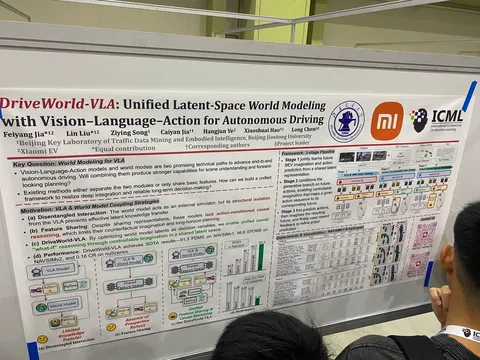
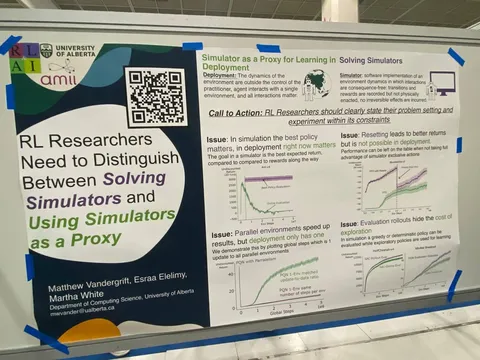

Продолжаем всё ближе подбираться к автономному транспорту в продолжении обзора работ с ICML, которая прямо сейчас продолжается в Сеуле.
DriveWorld-VLA: Unified Latent-Space World Modeling with Vision–Language–Action for Autonomous Driving
К сожалению, не получилось пообщаться с авторами. В статье они предлагают совместно обучать VLA- и WM-модели, чтобы у них был общий latent state. То есть, чтобы можно было генерировать потенциальные развития событий без вычислительно тяжелых пиксельных симуляций.
Обучают в три этапа.
1. Совместно VLA и VM: с маппингом картинок c камер, текстовых инструкций и BEV в общее пространство фичей, из которого параллельно предсказывают будущие BEV и действия эго.
2. Энкодер и action-голова замораживаются, обучается генерация будущих стейтов, обусловленная на действие.
3. Размораживается action-голова, и добавляется reward-модель, которая учится скорить будущие стейты по предложенным действиям.
В итоге получается попытка сделать модель, которая «представляет» потенциальные развития событий и выбирает наиболее подходящее действие.
Position: RL Researchers Need to Distinguish Between Solving Simulators and Using Simulators as a Proxy
Интересная position-статья с весьма очевидным названием, в котором авторы напоминают RL-щикам про разницу между «решением симулятора» и «использованием симулятора как прокси».
Иными словами: политики, хакнувшие реворд, плохо ведут себя в реальном мире. Кажется, статья больше нацелена на ресёрчеров, которым нужно бить бенчмарки, чтобы их статьи принимались в журналы.
С практической точки зрения, когда модели уже ездят в реальном городе, пользы в этих советах немного. По сути, единственный прикладной совет, — хорошие аугментации, которые позволяют политике быстрее найти нужные стейты, ускоряют сходимость. Весьма очевидная мысль, но всё равно было интересно пообщаться с автором.
#YaICML2026
Запомнил и рассказал
404 driver not found

